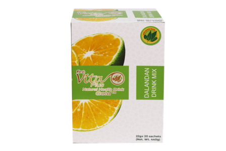

First Vita Plus Dalandan Gold

LIFE IS GOLD!
First Vita Plus’ premium products get more potent and power with this latest innovation from the natural healthy drink family.
Introducing the product that keeps giving its very best!
Your favorite Dalandan drink enhanced with Vitamin C with more selected premium leaves of Moringa, Corchorus, Capsicum, Amaranthus and Ipomoea Batatas.
Stay trim, slim and healthy with Dalandan GOLD.
Enjoy the “power of natural” in this sachet of wellness.
Dalandan Gold, Your healthy solution and partner in disease prevention!
Directions: Empty contents into 250ml glass of water. Stir until contents are completely dissolved. Relax and enjoy the refreshing and healthy taste of First Vita Plus.
NO APPROVED THERAPEUTIC CLAIMS
20 sachets
MAKES 20 GLASSES
SERVE HOT OR COLD